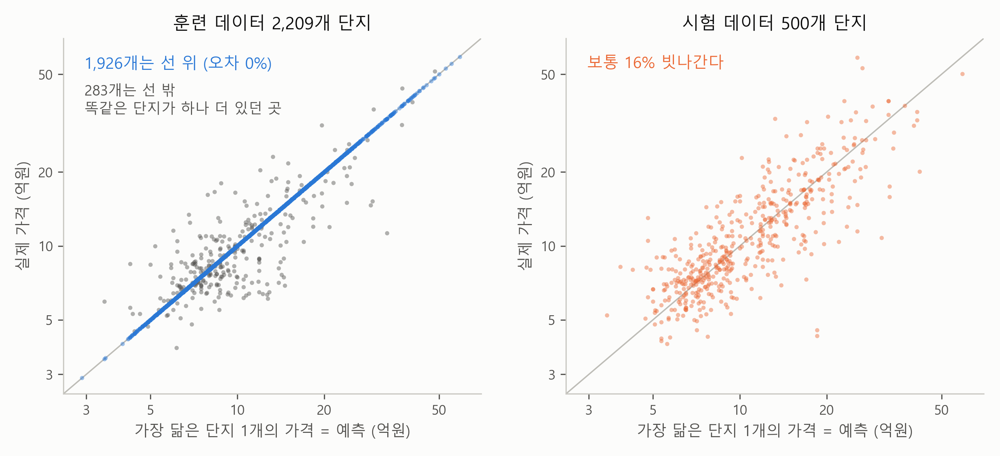
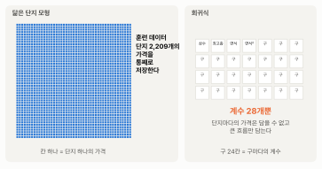

3. 외운 것과 배운 것 — 훈련 데이터와 시험 데이터#
보고서의 요약 둘째 줄에는 이상한 숫자가 있습니다.
가장 닮은 단지 1개로 예측하면 훈련 데이터에서는 0%, 시험 데이터에서는 16% 빗나간다(다르게 나누면 16 ~ 19%).
같은 모형인데 두 점수가 크게 다릅니다. 하나는 0%, 곧 하나도 빗나가지 않았다는 점수이고, 다른 하나는 16%입니다. 이 절에서는 시험공부 이야기로 감을 잡은 뒤, 닮은 단지 모형이 가격을 어떻게 예측하는지를 먼저 설명합니다. 그런 다음 세 가지를 묻습니다. 닮은 단지 1개 모형은 어떻게 0%를 받았는가. 0%와 16% 가운데 어느 쪽이 이 모형의 점수인가. 회귀식은 왜 두 점수가 거의 같은가.
기출문제와 본시험#
숫자를 보기 전에 시험공부 이야기를 하나 해 보죠. 이 이야기는 이 장이 끝날 때까지 계속 씁니다.
두 학생이 같은 기출문제집으로 시험을 준비합니다. 한 학생은 문제마다 답을 통째로 외웁니다. “17번의 답은 3번.” 다른 학생은 풀이를 익힙니다. 왜 3번이 답인지를 이해하려고 합니다. 공부를 마친 뒤 두 학생에게 그 기출문제집을 다시 풀게 하면 어떻게 될까요? 답을 외운 학생이 만점을 받습니다. 풀이를 익힌 학생은 몇 문제 틀립니다. 기출문제집의 점수만 보면 외운 학생이 더 잘하는 학생입니다.
본시험에서는 사정이 달라집니다. 본시험에는 처음 보는 문제가 나옵니다. 답을 외운 학생에게는 외워 둔 답이 쓸모가 없고, 풀이를 익힌 학생은 기출문제집에서와 비슷한 점수를 받습니다. 누가 정말 배웠는지는 본시험이 가려 줍니다.
머신러닝도 이 문제를 그대로 안고 있습니다. 규칙을 계산하는 데 쓴 훈련 데이터가 기출문제집이고, 채점하려고 따로 떼어 둔 시험 데이터가 본시험입니다. 우리 보고서에서는 2,209개 단지가 기출문제집, 500개 단지가 본시험인 셈입니다. 기출문제집으로 채점하면 외운 쪽이 가장 높은 점수를 받습니다.
닮은 단지 모형 — 가장 가까운 이웃#
닮은 단지 모형은 이렇게 예측합니다. 가격을 맞히려는 단지와 같은 구에서 연식과 최고층이 가장 비슷한 단지를 찾아, 그 단지들의 가격을 평균해 답으로 내놓습니다.
이 방법의 교과서 이름은 \(k\)-최근접 이웃(\(k\)-nearest neighbors, 줄여서 KNN)입니다. 가장 가까운 이웃 \(k\)개를 본다는 뜻이고, \(k\)는 닮은 단지를 몇 개 보느냐를 가리킵니다. 이 장에서는 지금처럼 닮은 단지 모형이라고 부르겠습니다.
얼마나 닮았는지는 연식의 차이와 최고층의 차이를 합쳐서 따집니다. 연식은 “년”, 최고층은 “층”으로 단위가 달라서 그대로는 합칠 수 없으므로, 먼저 두 변수를 같은 눈금으로 바꿉니다. 눈금은 각 변수의 표준편차로 맞춥니다. 표준편차는 단지들의 값이 평균에서 보통 얼마나 떨어져 있는지를 나타내는 숫자입니다. 훈련 데이터에서 연식의 표준편차는 8.2년이고 최고층의 표준편차는 7.2층입니다. 차이를 표준편차로 나누면, 두 변수 모두 “보통 떨어져 있는 폭의 몇 배만큼 다른가”라는 같은 눈금이 됩니다. 식으로 쓰면 이렇습니다.
이 값을 두 단지 사이의 거리라고 부릅니다. 예를 들어 연식이 1년, 최고층이 1층 다른 두 단지를 봅시다. 연식의 차이 1년은 1 ÷ 8.2 = 0.12가 되고, 최고층의 차이 1층은 1 ÷ 7.2 = 0.14가 됩니다. 두 값이 비슷하니, 이 데이터에서는 연식 1년의 차이와 최고층 1층의 차이가 거의 같은 무게로 들어갑니다. 두 단지의 거리는 \(\sqrt{0.12^2 + 0.14^2} = 0.18\)입니다. 거리가 가장 짧은 단지가 가장 닮은 단지입니다. 교과서 이름의 “가장 가까운 이웃”이 이 뜻입니다.
닮은 단지 1개 모형은 이렇게 맞힌다#
먼저 훈련 데이터에서 단지 한 곳을 뽑아, 닮은 단지 모형이 그 가격을 얼마로 예측하는지 보겠습니다. 강서구에 지은 지 18년 되고 최고층이 20층인 단지가 있고, 가격은 15.2억원입니다. 훈련 데이터의 2,209개 단지 가운데 이 단지와 가장 닮은 단지는 어디일까요? 바로 이 단지 자신입니다. 구가 같고, 연식도 최고층도 똑같으니 이보다 더 닮은 단지는 있을 수 없습니다. 닮은 단지를 1개만 본다면 평균할 것도 없이 그 한 곳의 가격이 그대로 답이 됩니다. 그래서 모형은 이 단지의 가격 15.2억원을 답으로 내놓고, 실제 가격도 15.2억원이니 오차는 0%입니다.
모형이 한 일은 가격을 맞힌 것이 아니라 그 단지의 가격을 다시 읽은 것입니다. 훈련 데이터에 있는 단지의 가격은 전부 저장되어 있고, 어느 단지를 물어도 자기 자신이 가장 닮은 단지로 뽑힙니다. 기출문제집의 답을 통째로 외운 학생과 같습니다. 훈련 데이터의 2,209개 단지 가운데 열에 아홉 가까이는 이렇게 자기 자신이 뽑혀 오차가 정확히 0입니다. 나머지는 같은 구에 연식과 최고층이 똑같은 단지가 하나 더 있어서 그쪽이 뽑힌 경우입니다. 절반이 훨씬 넘는 단지의 오차가 0이므로, 오차의 중위값도 0%입니다.
이번에는 시험 데이터에 있는 단지의 가격을 예측해 봅시다. 시험 데이터 500개 단지는 모형을 만들 때 쓰지 않았으므로, 모형은 이 단지들의 가격을 모릅니다. 모형에 알려 주는 것은 구, 연식, 최고층뿐입니다. 닮은 단지를 찾을 곳도 가격이 저장되어 있는 훈련 데이터의 2,209개 단지뿐입니다. 그래서 이번에는 자기 자신이 뽑힐 수 없고, 훈련 데이터의 다른 단지 가운데 가장 닮은 곳이 뽑힙니다. 표 3-1은 시험 데이터의 단지 네 곳과, 그 단지마다 가장 닮은 단지로 뽑힌 곳을 나란히 놓은 것입니다.
표 3-1. 시험 데이터의 단지와 가장 닮은 단지 (연식과 최고층, 가장 닮은 단지의 가격이 곧 예측)
구 |
시험 데이터의 단지 |
실제 가격 |
가장 닮은 단지 |
그 단지의 가격 |
오차 |
|---|---|---|---|---|---|
동작구 |
22년, 18층 |
15.00억원 |
22년, 18층 |
14.95억원 |
0.3% |
은평구 |
22년, 15층 |
6.19억원 |
22년, 15층 |
7.12억원 |
15.1% |
마포구 |
23년, 15층 |
22.00억원 |
23년, 15층 |
12.60억원 |
42.7% |
구로구 |
33년, 15층 |
6.15억원 |
33년, 15층 |
11.75억원 |
91.1% |
표에서 보듯이 닮은 단지를 찾는 일 자체는 잘 됐습니다. 네 곳 모두 연식과 최고층이 똑같은 단지가 뽑혔습니다. 시험 데이터 500개 단지 전체로 봐도, 열에 아홉은 연식이 2년 안쪽으로 가까운 단지가 뽑혔습니다. 문제는 연식과 최고층이 닮았다고 가격까지 닮지는 않는다는 데 있습니다. 첫 행의 동작구 단지는 500만원 차이로 맞혔지만, 셋째 행의 마포구 단지는 같은 구, 같은 연식, 같은 최고층의 단지가 뽑혔는데도 가격이 9억원 넘게 달랐습니다. 넷째 행의 구로구 단지는 실제 가격의 두 배에 가까운 답이 나왔습니다. 같은 구로구에서 연식과 최고층이 똑같은 두 단지의 가격이 6.15억원과 11.75억원입니다.
닮은 단지를 1개만 보면 그 한 곳이 어떤 단지냐에 답이 통째로 달려 있습니다. 우연히 가격이 비슷한 단지가 뽑히면 잘 맞고, 같은 구에서도 유난히 높거나 유난히 낮은 단지가 뽑히면 크게 빗나갑니다. 시험 데이터 500개 단지의 오차를 한 줄로 세우면 한가운데가 16.1%입니다.
그림 3-1은 두 채점을 나란히 그린 것입니다. 점 하나가 단지 하나입니다. 왼쪽 패널에는 선에서 벗어난 회색 점도 있습니다. 같은 구에 연식과 최고층이 똑같은 단지가 하나 더 있어서, 자기 자신이 아니라 그 단지가 뽑힌 경우입니다. 이런 단지는 2,209개 가운데 283개이고, 나머지 1,926개는 모두 선 위에 있습니다.

그림 3-1. 가장 닮은 단지 1개의 가격으로 예측한 결과. 점 하나가 단지 하나이고, 선 위의 점은 예측과 실제가 같은 단지다. 왼쪽: 훈련 데이터 2,209개 단지(회색 점은 선에서 벗어난 283개). 오른쪽: 시험 데이터 500개 단지.
그림에서 보듯이 왼쪽 패널에서는 파란 점 1,926개가 선 위에 한 줄로 서 있습니다. 예측한 가격과 실제 가격이 똑같다는 뜻입니다. 열에 아홉 가까운 단지의 오차가 0이니, 오차를 한 줄로 세웠을 때 한가운데 있는 값도 0%입니다. 보고서의 0%가 이 숫자입니다. 오른쪽 패널의 점은 선 둘레에 넓게 흩어져 있습니다. 같은 모형이 그린 두 그림이라고 믿기 어려울 만큼 다릅니다.
0%는 점수가 아니다#
이제 물음에 답할 수 있습니다. 0%와 16% 가운데 이 모형의 점수는 16%입니다.
우리가 알고 싶었던 것은 처음 보는 단지의 가격을 얼마나 잘 맞히느냐였습니다. 0%는 이미 가격을 알려 준 단지에게 그 가격을 되물어 얻은 점수입니다. 답을 외운 학생에게 기출문제집을 다시 풀린 것과 같아서, 모형이 무엇을 배웠는지에 대해 아무것도 말해 주지 않습니다. 우리가 이 모형을 쓴다면 가격을 모르는 단지에 쓸 것이므로, 그때 얼마나 빗나갈지를 미리 알려 주는 숫자는 16%입니다.
두 점수에도 이름이 있습니다. 훈련 데이터로 채점한 오차를 훈련 오차, 시험 데이터로 채점한 오차를 시험 오차라고 부릅니다. 닮은 단지 1개 모형의 훈련 오차는 0%, 시험 오차는 16%입니다. 모형의 점수는 시험 오차입니다. 훈련 오차가 아무리 작아도 그것만으로는 모형이 좋다고 말할 수 없습니다.
AI가 내놓은 분석 결과를 볼 때 가장 먼저 확인할 것이 이것입니다. “이 모형의 오차는 몇 %”라는 문장을 만나면, 그 오차가 훈련 데이터로 매긴 것인지 시험 데이터로 매긴 것인지부터 봅니다. 시험 데이터를 따로 떼어 두지 않고 가진 데이터 전부로 모형을 만든 다음 똑같은 데이터로 채점했다면, 그 점수는 닮은 단지 1개 모형의 0%와 같은 종류의 숫자일 수 있습니다.
회귀식은 외울 수 없다#
보고서의 표에서 회귀식의 행을 보면 훈련 오차도 15.8%, 시험 오차도 15.8%입니다. 닮은 단지 1개 모형과 달리 두 점수가 거의 같습니다. 왜 그럴까요?
회귀식에는 외워 둘 자리가 없기 때문입니다. 닮은 단지 모형은 훈련 데이터의 단지 2,209개의 가격을 전부 저장해 두고 씁니다. 회귀식은 그렇지 않습니다. 훈련 데이터로 계수를 계산하고 나면 단지 하나하나의 가격은 더 쓰지 않습니다. 남는 것은 계수뿐이고, 이 회귀식의 계수는 상수, 최고층, 연식, 연식의 제곱 등 4개, 그리고 구 24개를 합쳐 28개입니다. 숫자 28개로 단지 2,209개의 가격을 낱낱이 기억할 수는 없습니다. 회귀식이 담을 수 있는 것은 “강남구는 노원구보다 얼마나 높다”, “오래된 단지는 얼마나 낮다” 같은 큰 흐름뿐입니다. 그림 3-2가 두 모형이 저장해 두는 것을 나란히 보여 줍니다.

그림 3-2. 두 모형이 훈련 데이터로 만들어 두는 것. 왼쪽: 닮은 단지 모형은 훈련 데이터의 단지 2,209개의 가격을 모두 저장한다(칸 하나가 단지 하나). 오른쪽: 회귀식에 남는 것은 계수 28개다.
그림에서 보듯이 왼쪽의 닮은 단지 모형은 칸이 2,209개입니다. 칸마다 훈련 데이터 단지 하나의 가격이 들어 있어서, 훈련 데이터의 단지를 물으면 그 칸을 그대로 읽어 답합니다. 오른쪽의 회귀식은 칸이 28개뿐입니다. 여기에는 단지 하나하나의 가격을 넣을 자리가 없고, 구에 따라, 연식과 최고층에 따라 가격이 어떻게 달라지는지만 들어갑니다.
큰 흐름은 훈련 데이터에만 있는 것이 아니라 시험 데이터에도 똑같이 있습니다. 강남구의 단지가 노원구의 단지보다 높은 것은 어느 쪽 데이터에서나 마찬가지입니다. 그래서 회귀식은 훈련 데이터에서도 시험 데이터에서도 비슷하게 맞히고, 비슷하게 빗나갑니다. 풀이를 익힌 학생이 기출문제집에서나 본시험에서나 비슷한 점수를 받는 것과 같습니다.
표 3-2는 두 모형의 점수를 나란히 놓은 것입니다.
표 3-2. 훈련 데이터의 점수와 시험 데이터의 점수
모형 |
훈련 오차 |
시험 오차 |
훈련 \(R^2\) |
시험 \(R^2\) |
|---|---|---|---|---|
닮은 단지 1개 |
0.0% |
16.1% |
0.96 |
0.64 |
회귀식 |
15.8% |
15.8% |
0.75 |
0.75 |
표에서 보듯이 훈련 데이터의 점수만 보면 닮은 단지 1개 모형이 압도적으로 좋습니다. 오차는 0.0% 대 15.8%, \(R^2\)은 0.96 대 0.75입니다. 시험 데이터로 채점하면 이야기가 달라집니다. 오차는 16.1%와 15.8%로 비슷하고, \(R^2\)은 닮은 단지 1개 모형이 0.64로 회귀식의 0.75보다 낮습니다. 훈련 데이터의 점수로 모형을 골랐다면 잘못 골랐을 것입니다.
시험 데이터에서 두 모형의 오차는 비슷한데, \(R^2\)은 왜 닮은 단지 1개 모형 쪽이 낮을까요? 두 점수가 보는 곳이 다르기 때문입니다. 오차는 한가운데 단지 하나를 보기 때문에 크게 빗나간 단지가 얼마나 많은지는 반영하지 않습니다. \(R^2\)은 모든 단지를 다 보고, 크게 빗나간 단지일수록 무겁게 셉니다. 표 3-1의 넷째 행처럼 크게 빗나간 곳이 닮은 단지 1개 모형에는 여럿 있습니다. 시험 데이터 500개 단지 가운데 오차가 50%를 넘는 단지가 회귀식에서는 6%인데 닮은 단지 1개 모형에서는 9%입니다. 보통의 단지는 두 모형이 비슷하게 맞히지만, 닮은 단지 1개 모형은 가끔 아주 크게 틀립니다.
닮은 단지 1개 모형의 훈련 \(R^2\)이 1이 아니라 0.96인 것은, 앞에서 본 대로 연식과 최고층이 똑같은 단지가 같은 구에 또 있어 자기 자신이 뽑히지 않은 단지가 있기 때문입니다.
왜 500개를 숨겼나#
시험 데이터가 왜 필요한지는 이제 분명합니다. 데이터를 훈련 데이터와 시험 데이터로 나누는 일을 분할(split)이라고 합니다. 남은 것은 얼마나 떼어 둘 것인가입니다. 이 보고서는 2,709개 단지 가운데 5분의 1 정도인 500개를 시험 데이터로 떼었습니다.
여기에는 양쪽으로 당기는 사정이 있습니다. 시험 데이터를 많이 떼면 훈련 데이터가 줄어 모형이 볼 수 있는 예가 적어집니다. 시험 데이터를 적게 떼면 채점에 쓰는 단지가 적어 점수가 우연에 흔들립니다. 문제가 다섯 개뿐인 시험으로는 실력을 가늠하기 어려운 것과 같습니다. 정해진 답은 없고, 전체의 20%나 25%를 떼는 것이 흔한 선택입니다.
어느 단지를 뗄지는 무작위로 정합니다. 가격이 높은 단지만 골라 숨기거나 강남구의 단지만 골라 숨기면, 시험 데이터가 훈련 데이터와 다른 종류의 단지가 되어 버립니다. 무작위로 고르면 시험 데이터가 훈련 데이터와 닮은 구성이 됩니다. 본시험이 기출문제집과 같은 범위에서 나오게 하는 것입니다.
지켜야 할 규칙은 하나입니다. 시험 데이터는 모형을 만드는 동안 한 번도 보지 않는다. 시험 데이터를 떼어 놓고도 모형을 만들 때 슬쩍 참고한다면, 본시험 문제를 미리 보고 공부한 것과 같아서 점수를 믿을 수 없게 됩니다. 이 규칙이 생각보다 지키기 까다롭다는 것은 뒤의 절에서 다시 봅니다.
외우는 것이 늘 나쁜가#
닮은 단지 1개 모형이 외우는 모형이라고 해서 쓸모없는 모형은 아닙니다. 시험 오차 16.1%는 모든 단지를 전체 평균 가격 하나로 예측할 때의 36.4%보다 훨씬 낫고, 보통의 단지에서는 회귀식과 비슷합니다. 가장 닮은 단지의 가격은 꽤 쓸 만한 정보입니다.
문제는 한 곳에만 의지하는 데 있습니다. 한 곳의 가격에는 그 단지만의 사정이 섞여 있습니다. 마침 인테리어를 새로 한 집이 팔렸다거나, 1년 동안 한 건뿐인 거래가 급하게 판 것이었다거나 하는 사정입니다. 그런 사정은 다른 단지에는 해당하지 않습니다. 닮은 단지를 한 곳이 아니라 여러 곳 보고 평균하면 그런 사정이 서로 지워질 것 같습니다. 실제로 보고서에서 오차가 가장 작은 모형은 닮은 단지 10개의 가격을 평균해 예측하는 모형이었습니다. 그렇다면 많이 볼수록 좋을까요? 다음 절에서 봅니다.
요약 — 이 절의 물음과 답
닮은 단지 1개 모형은 어떻게 0%를 받았는가? 훈련 데이터에 있는 단지의 가격을 물으면 가장 닮은 단지로 그 단지 자신이 뽑힌다. 모형은 가격을 맞힌 것이 아니라 저장해 둔 가격을 다시 읽었다. 기출문제집의 답을 외운 학생이 그 문제집에서 만점을 받는 것과 같다.
0%와 16% 가운데 어느 쪽이 이 모형의 점수인가? 16%다. 모형을 만드는 데 쓴 데이터를 훈련 데이터, 따로 떼어 채점에만 쓰는 데이터를 시험 데이터라고 한다. 처음 보는 단지를 얼마나 잘 맞히는지는 시험 데이터의 오차만 말해 준다.
회귀식은 왜 두 점수가 거의 같은가? 회귀식에 남는 것은 계수 28개뿐이어서 단지 2,209개의 가격을 외울 수 없다. 계수가 담는 큰 흐름은 훈련 데이터와 시험 데이터에 똑같이 있으므로, 양쪽에서 비슷하게 맞힌다(둘 다 15.8%).